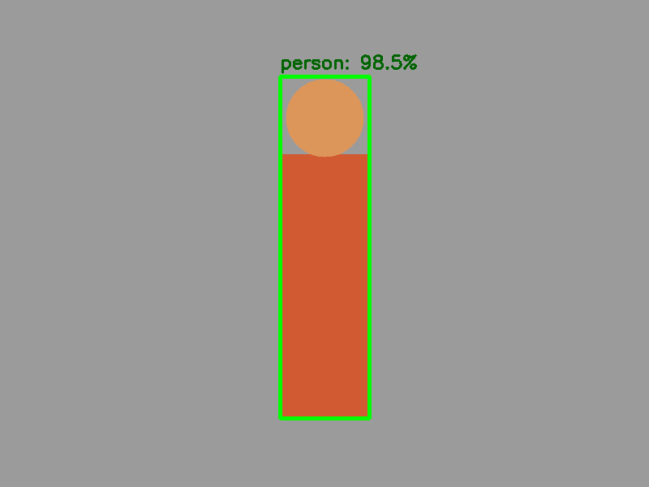

10. CNNs e o módulo DNN do OpenCV¶
O que você aprenderá¶
Neste capítulo, você fará a ponte entre os filtros construídos manualmente e os filtros aprendidos a partir de dados. Também aprenderá a usar o módulo cv2.dnn como motor de inferência, compreendendo o contrato de entrada e saída de uma rede.
Ao final, deverá conseguir:
- explicar a diferença entre kernel projetado e kernel aprendido;
- compreender a ideia de feature maps;
- interpretar uma CNN em alto nível;
- diferenciar treinamento e inferência;
- compreender o papel do
blobFromImage; - interpretar NCHW e HWC;
- compreender escala, média e ordem de canais;
- reconhecer por que pré-processamento incorreto pode produzir resultado ruim sem erro de execução;
- interpretar uma saída de detector SSD clássico;
- converter coordenadas normalizadas;
- filtrar detecções por confiança;
- limitar caixas aos limites da imagem;
- medir tempo de pré-processamento e inferência separadamente;
- compreender limitações de confiança não calibrada.
Redes neurais profundas aprendem representações hierárquicas a partir de dados, em vez de depender exclusivamente de características projetadas manualmente (GOODFELLOW; BENGIO; COURVILLE, 2016; CHOLLET, 2021).
10.1 Do filtro escolhido ao filtro aprendido¶
No capítulo de convolução, definimos manualmente kernels como Sobel.
Exemplo:
Em uma CNN, os pesos dos filtros são ajustados durante o treinamento para reduzir uma função de perda.
Analogia: professor versus aprendiz¶
No Sobel, o professor entrega a regra pronta. Na CNN, o sistema recebe exemplos e ajusta seus próprios filtros durante a aprendizagem.
10.2 Representações hierárquicas¶
Camadas iniciais frequentemente respondem a padrões simples, como bordas e contrastes.
Camadas intermediárias podem combinar esses padrões em:
- texturas;
- curvas;
- partes de objetos.
Camadas profundas formam representações mais adequadas à tarefa final (GOODFELLOW; BENGIO; COURVILLE, 2016).
Isso não significa que cada neurônio possua uma interpretação humana simples, mas a hierarquia é uma forma útil de pensar no processamento.
10.3 Treinamento versus inferência¶
Treinamento¶
Inferência¶
O módulo DNN do OpenCV é usado principalmente para inferência de modelos treinados em outros frameworks.
10.4 O modelo possui um contrato de entrada¶
Uma rede não aceita uma imagem arbitrária sem preparação.
O contrato pode especificar:
- tamanho espacial;
- canais;
- ordem RGB/BGR;
- escala numérica;
- média;
- normalização;
- layout do tensor.
Analogia: tomada elétrica¶
Mesmo que a energia esteja correta, um plugue com pinos incompatíveis não funciona corretamente. O pré-processamento adapta a imagem ao formato esperado pela rede.
10.5 HWC versus NCHW¶
Uma imagem OpenCV normalmente possui:
Exemplo:
Muitas redes trabalham com:
em que N é o tamanho do lote.
Para uma imagem:
10.6 blobFromImage¶
blob = cv2.dnn.blobFromImage(
imagem,
scalefactor=1.0,
size=(300, 300),
mean=(0, 0, 0),
swapRB=False,
crop=False
)
print(blob.shape)
O resultado costuma ser um tensor NCHW.
10.7 Escala numérica¶
Um modelo pode esperar pixels em:
ou:
ou ainda em uma faixa normalizada.
Exemplo:
Copiar o pré-processamento de outra rede é um erro
O modelo pode executar normalmente e produzir previsões ruins. Sempre use o pré-processamento definido para aquele modelo específico.
10.8 Subtração de média¶
Algumas redes esperam que uma média seja subtraída de cada canal.
A ordem desses valores depende da convenção usada no treinamento.
10.9 swapRB¶
troca vermelho e azul durante a preparação.
Isso é útil quando a imagem está em BGR, mas o modelo foi treinado esperando RGB.
10.10 Redimensionamento e deformação¶
Se a rede espera 300 × 300, uma imagem 1280 × 720 pode ser redimensionada diretamente, deformando proporções.
Alguns modelos foram treinados dessa maneira; outros usam letterbox.
A regra é:
reproduza a transformação usada no treinamento/inferência oficial do modelo.
10.11 Carregando uma rede¶
Exemplo clássico Caffe:
Para ONNX:
O formato depende da rede disponível.
10.12 Definindo entrada e executando forward¶
O significado de saida depende completamente da arquitetura.
Nunca suponha que toda rede devolve caixas no mesmo formato.
10.13 Saída SSD clássica¶
Alguns detectores SSD clássicos usam registros semelhantes a:
As coordenadas podem estar normalizadas entre 0 e 1.
Exemplo 1¶
classe = int(deteccao[1])
confianca = float(deteccao[2])
x1 = int(deteccao[3] * largura)
y1 = int(deteccao[4] * altura)
x2 = int(deteccao[5] * largura)
y2 = int(deteccao[6] * altura)
10.14 Confiança e limiar¶
Um limiar maior tende a:
- reduzir detecções fracas;
- reduzir alguns falsos positivos;
- potencialmente aumentar falsos negativos.
Confiança de rede não é necessariamente probabilidade bem calibrada.
10.15 Limitando coordenadas¶
Predições podem ultrapassar os limites após arredondamentos ou conversões.
x1 = max(0, min(x1, largura - 1))
y1 = max(0, min(y1, altura - 1))
x2 = max(0, min(x2, largura - 1))
y2 = max(0, min(y2, altura - 1))
Também rejeite caixas inválidas:
10.16 Desenhando a detecção¶
cv2.rectangle(
saida_img,
(x1, y1),
(x2, y2),
(0, 255, 0),
2
)
texto = f"classe {classe}: {confianca:.2f}"
cv2.putText(
saida_img,
texto,
(x1, max(20, y1 - 8)),
cv2.FONT_HERSHEY_SIMPLEX,
0.6,
(0, 255, 0),
2
)
10.17 Pré-processamento incorreto pode parecer “bug do modelo”¶
Sintomas:
- classes absurdas;
- confiança baixa em tudo;
- caixas inconsistentes;
- resultado muito pior que demonstrações oficiais.
Antes de culpar os pesos, confira:
- tamanho;
- escala;
- média;
swapRB;- ordem/layout;
- transformação de coordenadas.
10.18 Medindo latência¶
import time
inicio = time.perf_counter()
blob = cv2.dnn.blobFromImage(...)
t_pre = time.perf_counter() - inicio
net.setInput(blob)
inicio = time.perf_counter()
saida = net.forward()
t_inf = time.perf_counter() - inicio
print("Pré-processamento:", t_pre)
print("Inferência:", t_inf)
Separar etapas revela onde está o gargalo.
10.19 Aquecimento¶
A primeira inferência pode incluir custos de inicialização.
Depois meça várias execuções e use média/mediana.
10.20 Backend e target¶
O OpenCV pode oferecer diferentes backends e targets conforme a instalação.
Exemplo conceitual:
net.setPreferableBackend(cv2.dnn.DNN_BACKEND_OPENCV)
net.setPreferableTarget(cv2.dnn.DNN_TARGET_CPU)
Não presuma aceleração disponível. Consulte a instalação e valide desempenho no ambiente usado.
10.21 Exemplo integrado do capítulo¶
O código do capítulo 10 mantém a execução autocontida sem exigir download de pesos.
Ele:
- cria uma imagem de entrada;
- constrói um blob realista;
- mostra forma, tipo e intervalo;
- demonstra efeito de escala/média;
- cria uma saída SSD sintética;
- filtra detecções;
- converte coordenadas normalizadas;
- limita caixas;
- desenha resultado.

10.22 Erros comuns¶
| Sintoma | Causa provável | Correção |
|---|---|---|
| modelo executa mas erra tudo | pré-processamento incompatível | confira contrato |
| vermelho/azul trocados | swapRB incorreto |
valide ordem |
| caixa deslocada | coordenadas em espaço diferente | reverta resize/letterbox |
| caixa sai da imagem | arredondamento/predição | aplique clipping |
forward lento na primeira vez |
inicialização | faça aquecimento |
| saída com shape inesperado | arquitetura diferente | consulte documentação do modelo |
| confiança tratada como certeza | interpretação inadequada | avalie calibração/métricas |
10.23 Perguntas de revisão¶
- Qual diferença existe entre um Sobel e um filtro aprendido?
- O que é inferência?
- O que significa NCHW?
- Qual função cria blobs no OpenCV?
- Para que serve
swapRB? - Por que escala numérica importa?
- O que ocorre se a média estiver errada?
- Toda rede DNN devolve SSD?
- Por que limitar caixas aos limites da imagem?
- Por que separar latência de pré-processamento e inferência?
Exercícios de fixação¶
Exercício 1¶
Crie blobs de uma mesma imagem com escalas 1, 1/255 e 1/127.5. Compare mínimo, máximo e média.
Exercício 2¶
Compare swapRB=False e True em uma imagem com bloco vermelho e bloco azul.
Exercício 3¶
Imprima a forma de um blob criado para 224 × 224.
Exercício 4¶
Implemente uma função que converta uma detecção SSD normalizada em (x1,y1,x2,y2).
Exercício 5¶
Faça clipping das caixas e escreva testes para coordenadas negativas e maiores que a imagem.
Exercício 6¶
Rejeite caixas com largura ou altura nula.
Exercício 7¶
Simule detecções com confiança 0.2, 0.45, 0.6, 0.9 e compare limiares 0.4 e 0.7.
Exercício 8¶
Meça separadamente o tempo de blobFromImage e de uma operação computacional simulando forward.
Exercício 9¶
Explique por que uma imagem 1920 × 1080 redimensionada diretamente para 300 × 300 muda a geometria.
Exercício 10¶
Pesquise no arquivo/documentação do modelo utilizado qual pré-processamento ele exige e registre cada parâmetro.
Exercício 11¶
Explique por que comparar FPS de dois modelos sem informar hardware e tamanho de entrada é inadequado.
Exercício 12¶
Construa um checklist de depuração para “modelo roda, mas prevê mal”.
Síntese¶
O módulo DNN só produz resultados confiáveis quando respeitamos o contrato do modelo. Tamanho, escala, média, canais e geometria de entrada não são detalhes acessórios. A compreensão desse pipeline evita um dos erros mais comuns em visão com redes neurais: executar corretamente um modelo com uma entrada preparada de forma incorreta.
Referências¶
CHOLLET, François. Deep Learning with Python. 2. ed. Shelter Island: Manning, 2021.
GOODFELLOW, Ian; BENGIO, Yoshua; COURVILLE, Aaron. Deep Learning. Cambridge: MIT Press, 2016.
SZELISKI, Richard. Computer Vision: Algorithms and Applications. 2. ed. Cham: Springer, 2022.